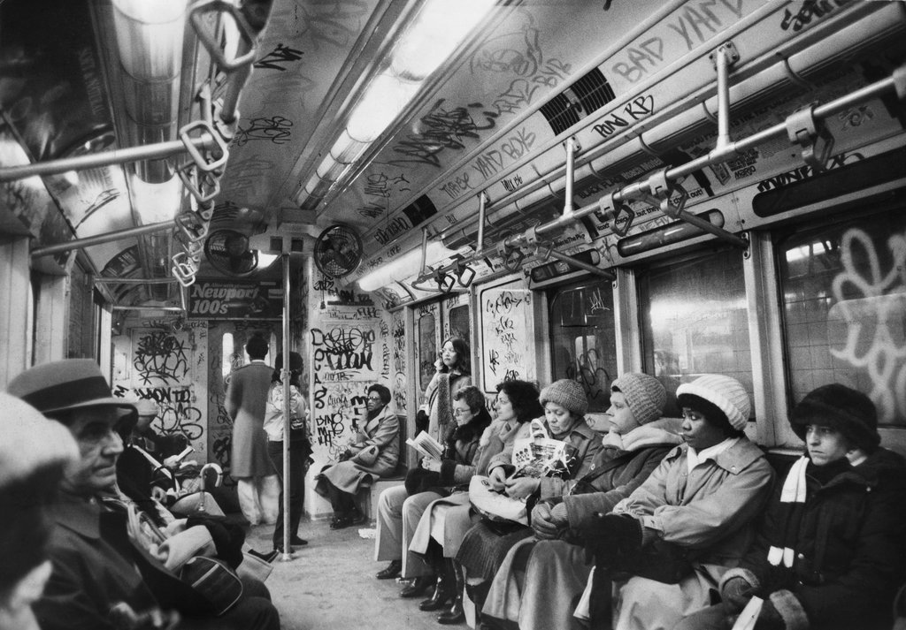
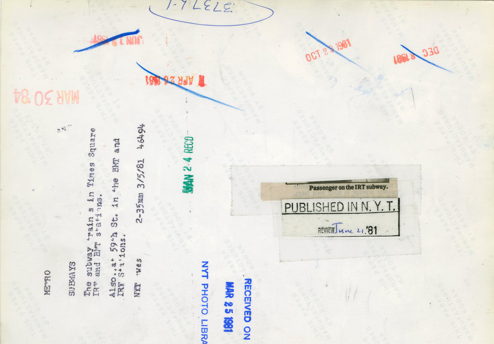

March 5, 1981: Passengers on the New York subway, which was projecting a $369 million deficit that year. A brief story in The Times explained that a tax on oil companies passed by New York lawmakers was intended to narrow that deficit, but that a Federal appeals court effectively abolished the tax, “which had been counted on to produce more than $235 million a year, most of it earmarked for the cash-starved Metropolitan Transportation Authority.” Photo: The New York Times